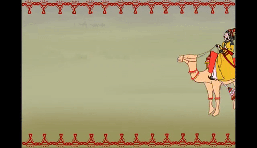
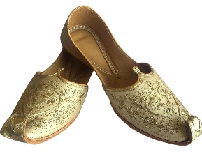
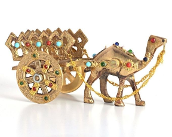

Handicrafts of Rajasthan
पधारो म्हारे देस
The handicrafts of Rajasthan are world known.The Rajasthani handlooms and crafts are liked and sought by most markets across world.

The origin of this famous craft comes from Jaipur, Rajasthan. It originally has a Turko-Persian background. Its size and shape take influence from Chinese pottery. These pottery items are usually embellished with animals, birds and flower motifs. Handicrafts that are commonly made with pottery include a flower vase, ashtray, small bowls and ports

The hub of Ivory Jewellery is Jaipur. The material comes from an elephant’s trunk. Ivory jewellery is very strong and it does not crack easily. Ivory is very old. When metal was not around, men made weapons using ivory. And that’s a long time ago. Ivory is considered as a luxurious item as it is expensive.

Meenakari is an ancient and fascinating Indian jewellery tradition. Raj Man Singh of Mewar, Rajasthan was regarded as the patron of this art in the 1500s. It is also a symbol of culture and tradition.The rich, ruby red color used here is highly sought after. Nathdwara, Bikaner and Udaipur are also famous for their silver meenakari.

Mojaris or Jutis are handmade footwear with exquisite embroidery. The hubs of Mojaris are Jaipur and Jodhpur. However, the patterns of Mojaris may vary from district to district. Mojaris are popular among locals and travellers who visit India.Famous for its ornate embroidery known as Kashida on leather or colored velvets, a pair of Jodhpuri Jootis or Mojris is a symbol of aristocracy in any ceremonial dress.

The metalcraft of Rajasthan showcases the classical history of regal culture and traditions. Items produced with this craft include table boxes, antiques, figurines and brass art. Most popular metal product styles include Bichi, Chikan and Matori but the most favoured one is Theva. Pratapgarh, Rajasthan is practicing this craft for a long time. Metalcraft is said to be 400 years old.